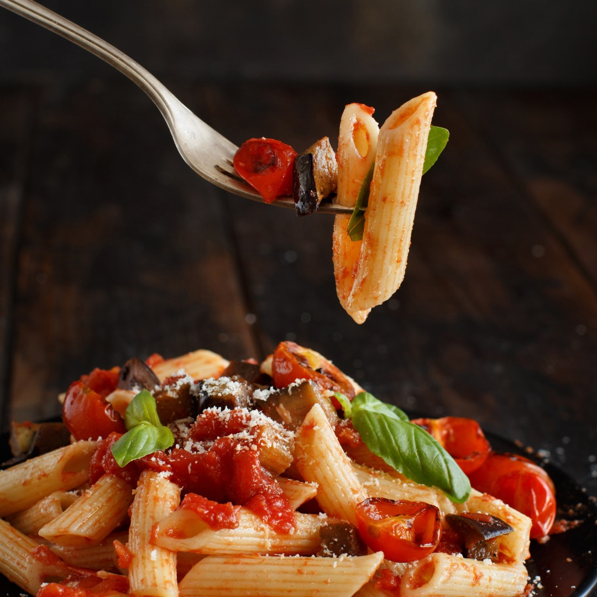

A Itália é um país que se pode saborear. Cada região tem suas próprias especialidades, seus próprios segredos culinários. De norte a sul, embarquei em uma jornada para desvendar os sabores que tornam a cozinha italiana uma das mais amadas do mundo.
Em Bolonha, aprendi a fazer o verdadeiro tagliatelle al ragù. Em Nápoles, me deliciei com a pizza margherita, simples e perfeita. Na Sicília, os doces, como o cannoli, conquistaram meu coração (e meu estômago).
Os Sabores da Tradição
Mais do que apenas comida, a culinária italiana é sobre tradição, família e ingredientes frescos. Visitei mercados locais, conversei com produtores e participei de aulas de culinária para entender a alma de cada prato.
Na Itália, a comida não alimenta apenas o corpo, mas também a alma.
Esta viagem foi uma celebração da boa comida e da boa companhia. Cada refeição era um momento de alegria e descoberta. Se você é um amante da gastronomia, a Itália é um destino obrigatório.
Nos próximos posts, vou compartilhar as receitas que aprendi e dicas de restaurantes imperdíveis em cada cidade que visitei. Prepare-se para uma viagem de dar água na boca!